Galerias
Esta seção se destina a apresentar a relação daquelas pessoas que são fundamentais para o funcionamento da Paróquia, bem como as estruturas pelas quais ela é responsável pela manutenção.
Relação de Padres da nossa Paróquia
Sejam bem-vindos à nossa Galeria de Padres, um espaço dedicado a honrar e preservar a memória dos sacerdotes que, com dedicação e fé, conduziram nossa comunidade ao longo dos anos. Cada padre retratado aqui deixou um legado único, marcando a história da nossa igreja com suas missões, celebrações e orientações espirituais.
Ao navegar por esta galeria, você encontrará fotos que representam momentos especiais de suas trajetórias, eventos significativos, e o impacto de suas contribuições. Cada imagem carrega consigo uma história de serviço e devoção, relembrando os pilares espirituais que ajudaram a moldar nossa comunidade ao longo das décadas.
Que esta galeria seja não apenas um tributo, mas também uma inspiração para todos que buscam seguir os passos da fé, com a mesma entrega e amor pelos ensinamentos de Cristo.
1º - Pe. Agostinho Rutkoski
(24/02/1978 – 17/01/1980)- 2º - Pe. Pedro Grzelczaki
(17/01/1980 – 23/03/1990) - 3º - Pe. Amadeu Fracaro
(23/03/1990 – 24/11/1991) 
4º - Pe. Abrão Becker
(24/11/1991 – 04/05/1995)
5º - Pe. Casemiro Przepiura
(04/05/1995 – 17/12/1998)- 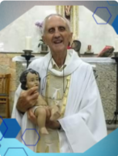
6º - Pe. Silvio Mocelin
(17/12/1998 – 18/01/2001) - 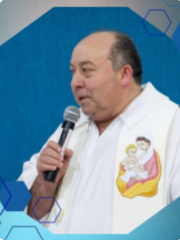
7º - Pe. Moacir Gomes
(18/01/2001 – 25/09/2002) - 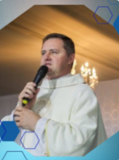
8º - Pe. Luiz Carlos Mirkoski
(25/09/2002 – 18/12/2003) 
9ª - Pe.José Lauro G. Gomes
(18/12/2003 – 05/02/2005)
10º - Pe. Marcelo Melo
(05/02/2005 - 27/01/2013)- 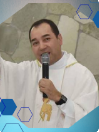
11º - Pe. Nelson Bueno da Silva
(01/02/2013 - 28/02/2022) - 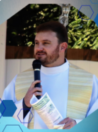
12º - Pe. Daniel Farago
(06/03/2022 - 04/04/2022) - 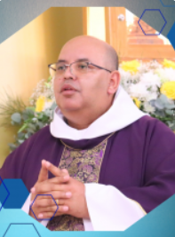
13º - Pe. Jose Nilson Santos
(04/04/2022 - atualmente)
Relação de Vigários de nossa Paróquia
Bem-vindo à nossarelação dos vigários, uma homenagem a todos os líderes espirituais que, ao longo dos anos, dedicaram suas vidas ao serviço desta igreja e à nossa comunidade. Cada vigário aqui representado desempenhou um papel fundamental na construção e fortalecimento de nossa fé, conduzindo-nos com sabedoria, amor e compromisso.
- Pe. Pedro Grzelczaki – vigário cooperador (1978)
- Pe. Evaldo Fidelix – vigário cooperador (1981)
- Pe. Isaias Becher – vigário (ad tempora)
- Pe. Pedro Gavlak – vigário cooperador (1986-1988)
- Pe. José Lauro Gonçalves Gomes – vigário paroquial (1989/2022)
- Pe. Gilson Rigoberto Ringvelski (1990-1991)
- Pe. Isaias Becher – vigário ad tempora
- Pe. Casemiro Przepiura – vigário paroquial (1994)
- Pe. Silvio José Briginski – vigário paroquial (1995)
- Pe. Abrão Becher – vigário paroquial (1986/1997)
- Pe. Anderson Spegiorim – vigário paroquial (1998)
- Pe. Glauco Camargo Pinto – vigário paroquial (1998)
- Pe. Estanislau Kapuscinski – vigário paroquial (1998)
- Pe. Moacir Gomes – vigário paroquial (1999)
- Pe. Alceu João Maders – vigário paroquial (2004)
- Pe. Marcelo Melo – vigário paroquial (2004)
- Pe. Leonel Stanski – vigário paroquial (2005)
- Pe. Noé Borges Vieira – vigário paroquial (2006-2008)
- Pe. Athanagildo Vaz Neto (2010-2011)
- Pe. Ezequiel Hul – vigário paroquial (2012-2013)
- Pe. Cristiano Marcos Rodrigues – vigário paroquial (2016-2018)
- Pe. Daniel Farago – vigário paroquial (2018-2020)
- Pe. Rodrigo Ribas – vigário paroquial (2020-2021)
- Pe. José Lauro Gonçalves Gomes – vigário paroquial (2022-2023)
- Pe. Alexandre Spena Regueira – vigário paroquial (2024)
Relação de Diáconos de nossa Paróquia
Seja bem-vindo à nossa galeria de diáconos, os servos dedicados que desempenham um papel fundamental em nossa igreja. Cada um deles é comprometido em seguir o exemplo de Cristo, servindo a Deus e à comunidade com amor, humildade e integridade. Sua missão é apoiar o corpo da igreja, auxiliar nos cultos e prestar assistência às necessidades espirituais e físicas dos membros e da comunidade ao nosso redor.

Adenilson Batista
Eduardo Sedoski
Nelson Poncoski Penteado
Pedro Ricardo Basílio
Theodoro Schreider Filho

Padres ordenados em nossa Paróquia
É com grande alegria que nossa paróquia recorda os padres que, ao longo dos anos, foram ordenados e enviados para servir a Deus e à comunidade. Cada um deles dedicou sua vida ao ministério sacerdotal, respondendo ao chamado divino com generosidade e fé. Este espaço é dedicado a celebrar suas jornadas, suas vocações e o impacto que tiveram em nossas vidas.
Aqui você encontrará os nomes daqueles que, com o coração aberto à vontade de Deus, se tornaram pastores em nossa Igreja. Que suas histórias de serviço e amor inspirem novas gerações a seguir o caminho da fé e do discipulado.
- Padre Athanagildo
- Padre Celso (ex)
- Padre Cristiano
- Padre Elcio
- Padre Ezequiel Hul
- Padre Ivan
- Padre José Bacheladenski
- Padre Leonel
- Padre Mário Dwulaka
- Dom Mário Spaki
- Padre Moacir
- Padre Paulo (ex)
Religiosas de nossa Paróquia
É com grande alegria que apresentamos as religiosas que, com dedicação e fé, servem à nossa comunidade paroquial. Elas, em sua missão de vida consagrada, se dedicam a fortalecer a espiritualidade, apoiar as ações pastorais e caminhar junto ao povo de Deus. Cada uma dessas irmãs traz consigo um carisma único, inspirado pela vocação ao serviço e pelo amor a Jesus Cristo.
- Irmã Josefa Helena - Cerro da Ponte Alta
- Irmã Mônica Specht - Canhadão
- Irmã Jocélia Chuproski - Rio Bonito
Relação de Capelas pertencentes à nossa Paróquia
Além da Matriz, nossa paróquia conta com diversas capelas espalhadas pela região, cada uma sendo um ponto de encontro onde a comunidade local se reúne para a oração e celebração dos sacramentos. Cada capela reflete a história e a devoção particular das comunidades que a cercam, sendo verdadeiros lares espirituais.
Se você ainda não conhece, convidamos a visitar as capelas pertencentes à Matriz e a participar das missas e eventos que acontecem regularmente. Em cada uma delas, você encontrará um ambiente acolhedor, onde a fé e a fraternidade fortalecem nossa caminhada cristã.

Capela Imaculado Coração de Maria - Itapará
Capela Nossa Senhora Sant'Ana
Cadeado SantAna
Capela São Sebastião
Cadeadinho
Capela Senhor Bom Jesus
Cerro da Ponte Alta
Capela Nossa Senhora de Fátima
Canhadão
Capela São Sebastião
Rio do Couro
Capela Mãe da Divina Graça
Campina de Gonçalves Junior
Capela São Francisco
Faxinal dos Mellos
Capela Santo Antonio
Cachoeira do Palmital- 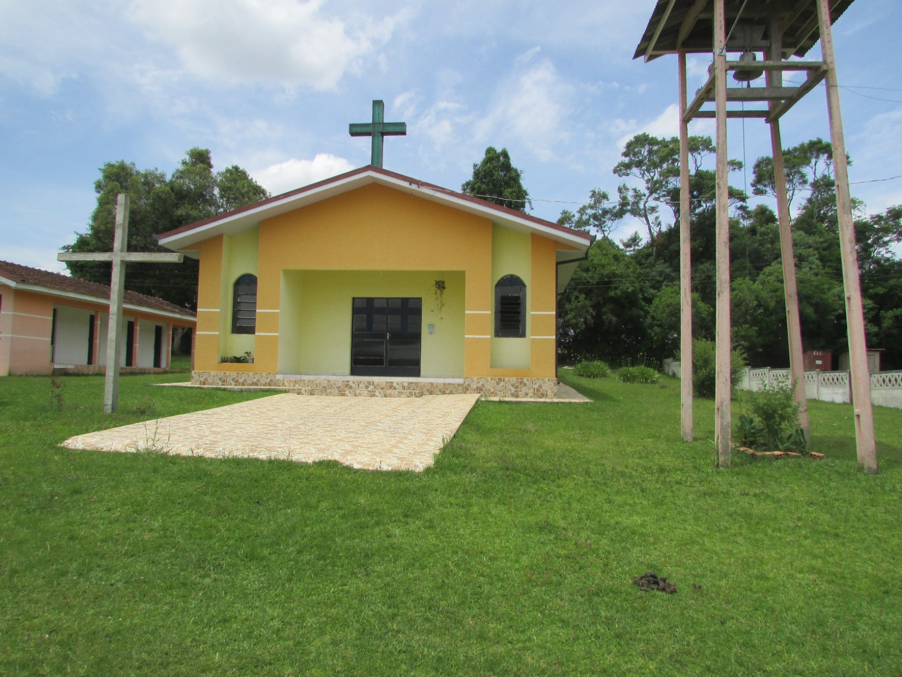
Capela Nossa Senhora da Luz
Faxinal do Rio do Couro - 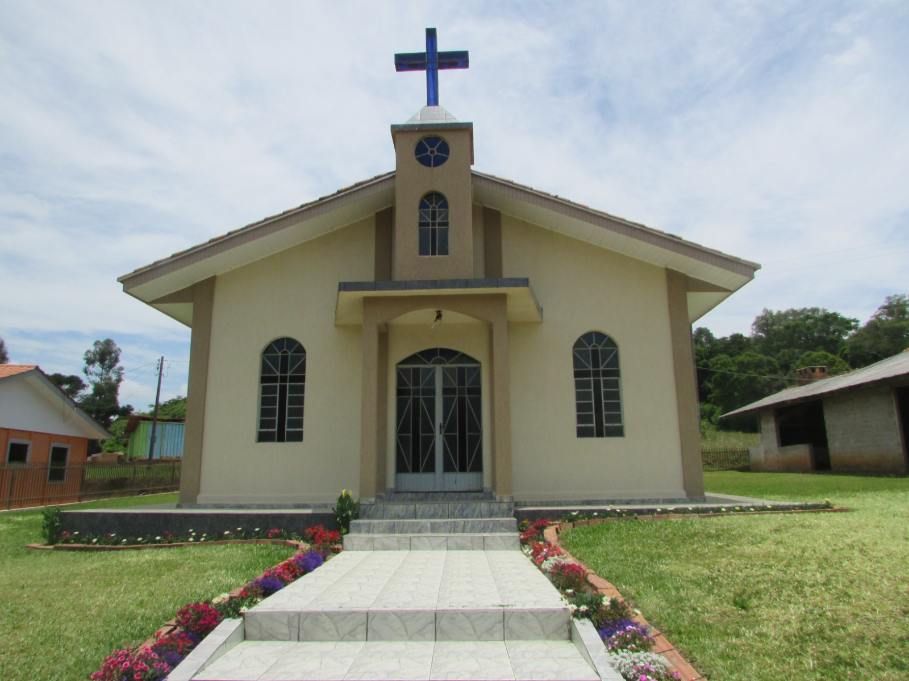
Capela Nossa Senhora Aparecida
Volta Grande - 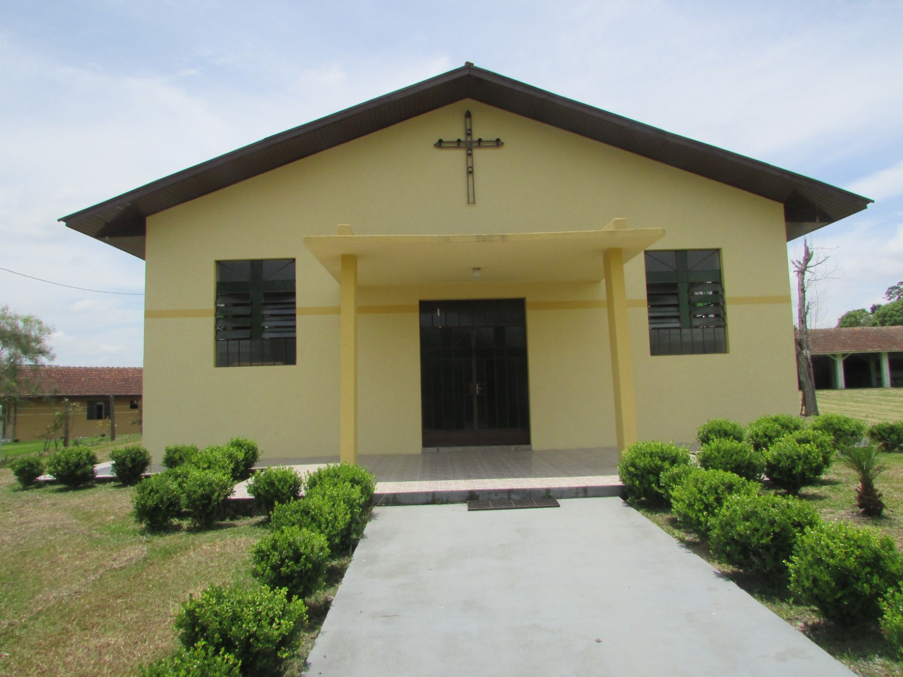
Capela São Braz
Mato Queimado - 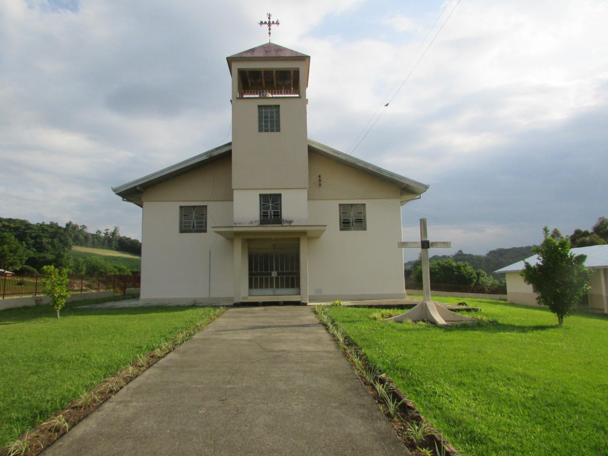
Capela Santo Estanislau
Gonçalves Júnior - 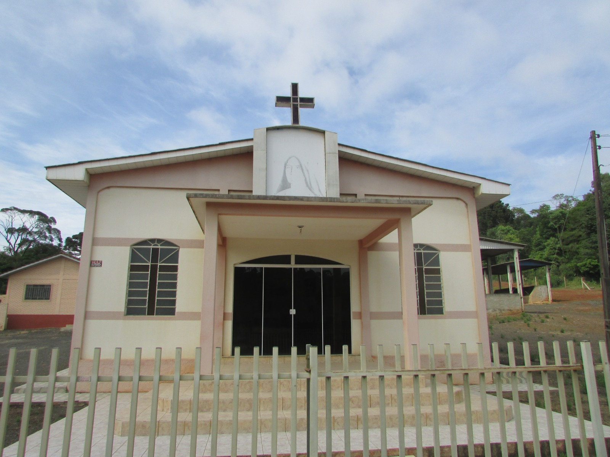
Capela Santíssima Trindade - Madre Paulina
Caratuva I 
Capela Nossa Senhora Aparecida e Santos Inocentes - Alto da Lagoa
Capela Santa Cruz
Caratuva II
Capela Nossa Senhora Aparecida
Linha Pinho
Capela São Pedro e São Paulo
Alvorada- 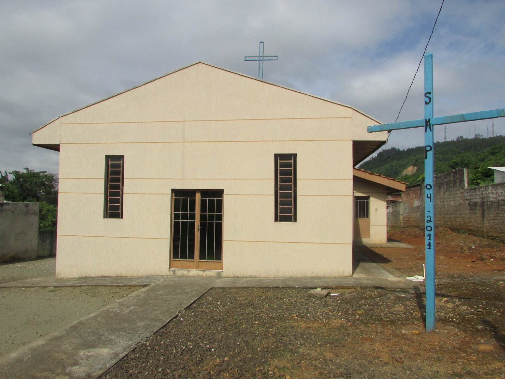
Capela Santa Terezinha do Menino Jesus
Pedreira - 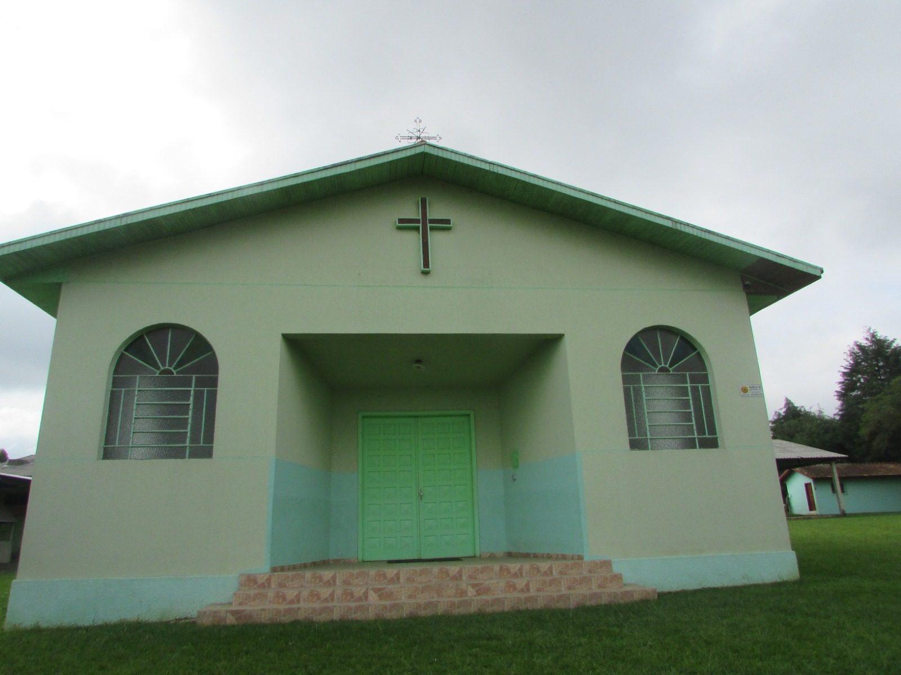
Capela Nossa Senhora das Graças
Pinho de Cima